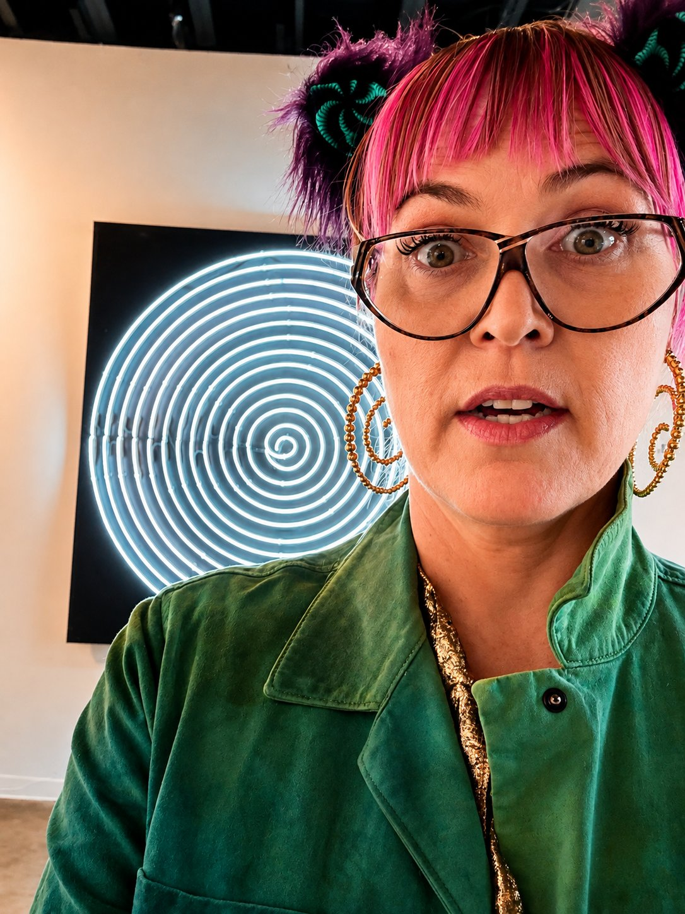
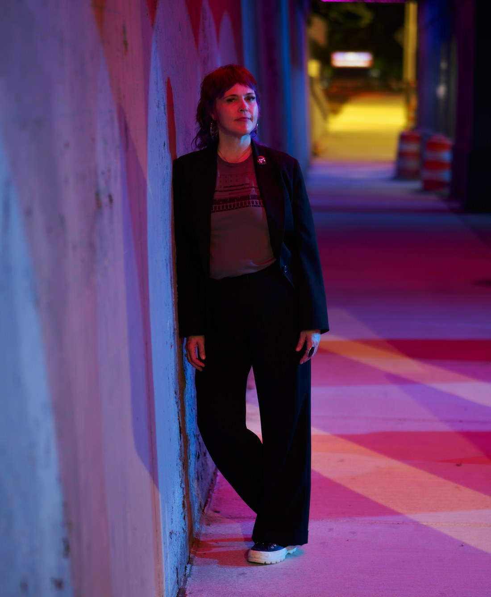

Identity
Clear positioning, narrative, and cohesive brand systems.
For more than twenty-five years, I’ve worked at the intersection of entertainment and technology, turning emerging ideas into products and experiences people could understand, trust, and adopt.
Today, I’m applying that same thinking to independent artists.
The Throughline
My career has always lived where technology, creativity, and uncertainty meet.
From San Francisco to Los Angeles, and from interactive entertainment and virtual reality to enterprise software and software-defined vehicles, I’ve helped organizations including Ford Motor Company, Disney, Google, Microsoft, Jaunt, WEVR, and Publicis Groupe bring new ideas into the world before established playbooks existed.
Across every industry, the challenge was the same.
The best products aren’t simply built.
They’re positioned clearly and designed around the people they’re meant to serve.
Why Artists?
I moved from Los Angeles to Detroit in 2020, about ten weeks before COVID changed everything.
I didn’t move here because of the music.
But I fell in love with the city through it.
The more time I spent around Detroit’s musicians, DJs, producers, promoters, venues, and creative communities, the more I saw extraordinary talent surrounded by a familiar problem:
Independent artists are expected to be the creator, brand, marketer, booking operation, strategist, publisher, and business behind their work.
That’s where Sentient begins.
Why Detroit?
Motown. Soul. Gospel. Blues. Jazz. Funk. Garage rock. Proto-punk. Punk. Hard rock. Shock rock. Techno. Electro. House. Hip-hop. Hardcore. Experimental music.
Generation after generation, Detroit artists have taken what existed, pushed it somewhere new, and sent it back out into the world.
From Motown to The Rationals, MC5 and The Stooges. From Alice Cooper and Parliament-Funkadelic to the architects of Detroit techno. From J Dilla and Detroit hip-hop to The White Stripes and generations of musicians still creating here today.
What struck me wasn’t simply the history.
It was realizing that this is still happening.
Detroit didn’t just introduce me to an extraordinary music community.
It made me start thinking about the artist as a system.
How does extraordinary work become a sustainable career?
How does one release, performance, fan, or relationship become the beginning of the next opportunity?
Those questions became Sentient.
Detroit isn’t just where I work.
It’s the community that shaped this company.

What I Do
Together, we build the systems that support a sustainable creative career.
Clear positioning, narrative, and cohesive brand systems.
Professional websites, Electronic Press Kits, and career-ready infrastructure.
Audience intelligence, community growth, partnerships, and meaningful fan engagement.
Revenue diversification, licensing, opportunity evaluation, and long-term business strategy.
Release planning, career roadmaps, relationships, and sustainable systems for continuous growth.
The goal isn’t to manufacture artists.
It’s to help you build a career that can travel, adapt, and endure.
My Philosophy
Don’t amplify confusion.
Every release, performance, and project teaches you something.
Sustainable careers outperform viral moments.
Great work is rarely created alone.
The mission is bigger than the individual.
Success creates opportunities for the artists who come next.
Why Sentient?
My career has taken me through entertainment, emerging technology, immersive media, software, and innovation.
Sentient brings those disciplines into artist development.
Start with the artist.
Understand the work, the identity, the audience, the ambition, and the definition of success.
Then build the strategy and infrastructure around them.
Because being independent shouldn’t mean doing everything alone.

Let’s Build Something That Lasts
Whether you’re preparing your first professional release or rethinking an established career, the goal is the same:
Build a career around your work that is professional, intentional, and sustainable.
Work With Sentient hello@sentientproductions.comSelected experience
A career spent helping emerging media, platforms, and technologies become experiences people could discover, understand, and adopt. Those lessons now shape how I help artists build sustainable careers.
Organizations where I helped build emerging products, experiences, and technologies across entertainment, immersive media, enterprise software, and mobility.


The work that shaped how I think about storytelling, audience adoption, digital platforms, and sustainable creative careers.
Interactive Experiences


Distribution Platforms